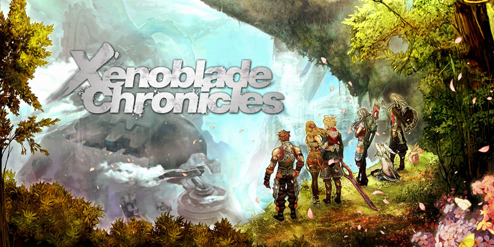
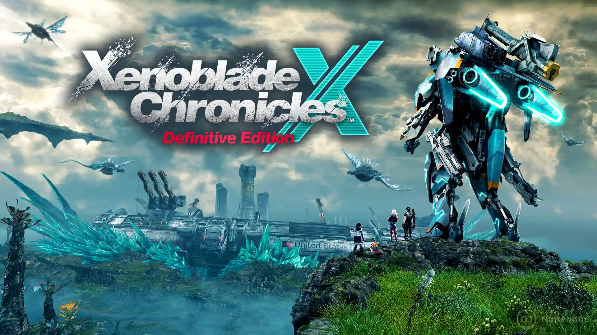
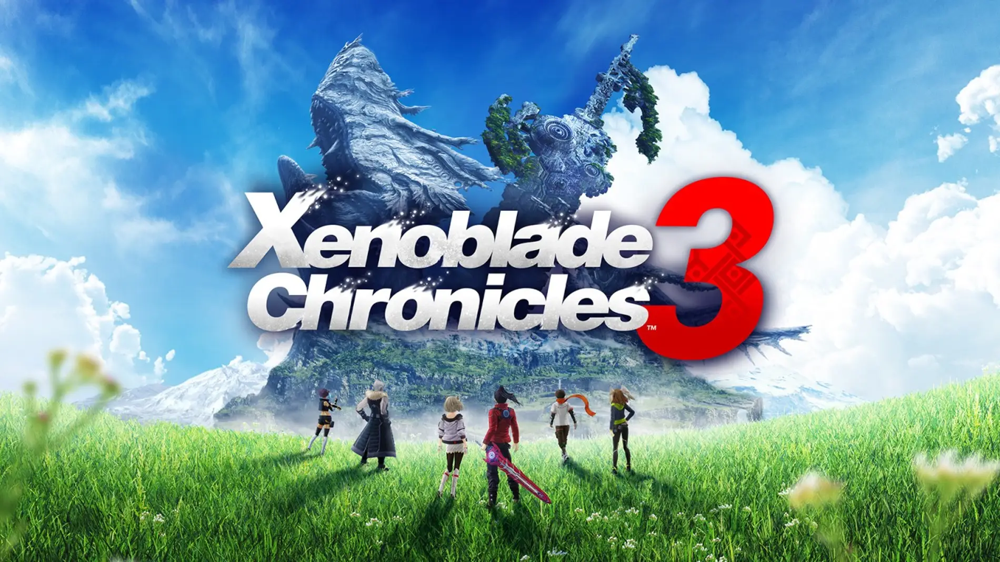

Xenoblade Chronicles (2010)
El primer título que definió la saga. Ambientado en los cuerpos gigantes de los titanes Bionis y Mechonis, introdujo los elementos centrales de la franquicia: el vasto mundo abierto, un sistema de combate RPG de acción con posiciones y el uso de la Monado, una espada con la capacidad de ver el futuro. Es fundamental por su narrativa épica sobre el destino y la guerra entre Homs (humanos) y Mékon.
Xenoblade Chronicles X (2015)
Una entrega que se centró en la exploración pura y la ciencia ficción. La humanidad naufraga en el planeta inexplorado Mira tras la destrucción de la Tierra. El juego destacó por su mundo de escala colosal dividido en continentes únicos y por la introducción de los Skells (mechas pilotables), que permiten el combate aéreo y una exploración sin límites. Se enfoca menos en la narrativa lineal y más en el descubrimiento y el establecimiento de una nueva civilización.
Xenoblade Chronicles 2 (2017)

Introdujo una nueva configuración de mundo: el Mar de Nubes, donde la gente vive en la espalda de gigantescas criaturas vivientes llamadas Titanes. La historia se centra en Rex y su Blade, Pyra/Mythra, en la búsqueda del Elíseo. El combate giró en torno a la sinergia entre los Drivers y sus Blades (formas de vida energéticas con sus propias habilidades), siendo un título con una fuerte carga emocional y una narrativa de corte más clásico.
Xenoblade Chronicles: Definitive Edition (2020)

Una remasterización completa del primer juego (Wii) para Nintendo Switch, con gráficos mejorados, música regrabada y una interfaz de usuario optimizada. Incluyó el epílogo inédito "Futuros Conectados" (Future Connected), que proporciona un cierre narrativo a ciertos personajes y sirve como puente conceptual para futuras entregas.
Xenoblade Chronicles 3 (2022)
Presenta un mundo unificado, Aionios, formado por los escenarios y personajes de los dos juegos anteriores. La trama se centra en una guerra eterna entre las naciones de Keves y Agnus. Su mecánica central es la transformación Uróboros, que permite a los personajes fusionarse en poderosas formas durante el combate. La narrativa explora temas de tiempo, vida, muerte y la libertad frente al ciclo de la guerra.
Xenoblade Chronicles 3: Future Redeemed (2023)

Un DLC de expansión para Xenoblade Chronicles 3 que funciona como una precuela. Concluye la Trilogía Alvis y une formalmente los hilos narrativos de las tres entregas principales. Su jugabilidad se centra en el regreso de figuras icónicas de toda la saga, ofreciendo un sistema de combate depurado y un fuerte enfoque en el lore fundacional del universo Xenoblade.